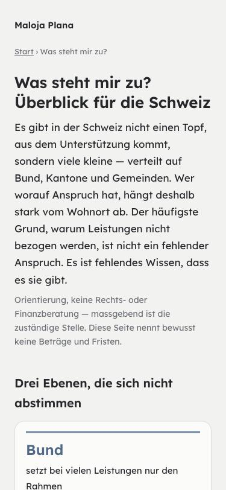
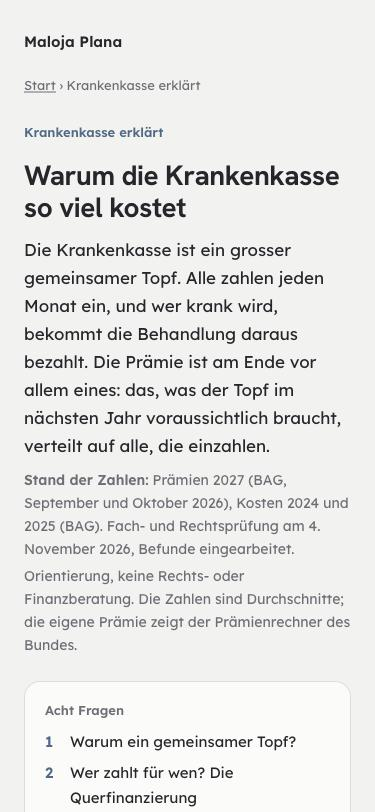
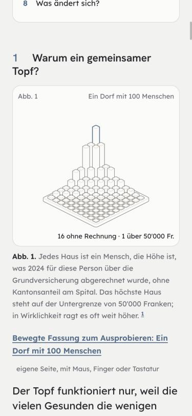
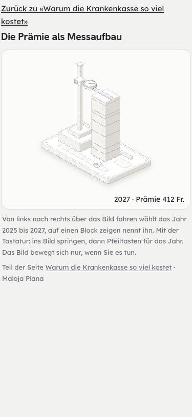

Durchgang 11.11.2026 auf main c865f518. Vierte der fünf Gruppen der Seiten, die die Kapitel-Befunde 1–7 nicht erfassen (Inventar: Gesamtbefund, Abschnitt 5, Punkt 5, auf dem Zweig befund/gruppe-a-einstieg). Zehn Seiten: Stipendien in der App; die Erklärseiten «Was steht mir zu?», «Sozialhilfe», «Steuern», «Prämienverbilligung» (nur die Übersicht), «Kantone im Vergleich», «Krankenkasse erklärt» mit den fünf bewegten Fassungen; Nachprüfung «Kantonsatlas» und «Politsystem». Nicht dabei: die übersetzten Erklärseiten (#692) und die 26 IPV-Kantonsseiten. Die statischen Seiten sind erzeugt — geändert wird in scripts/seiten-inhalt.mjs (die vier kurzen) bzw. scripts/seiten/*.mjs (die langen), nie in public/. Gemessen im Browser bei 375 px: statische Seiten aus diesem Arbeitsbaum, Stipendien auf dem App-Server des Gruppe-A-Zweigs (dort an StipendienView.jsx nichts geändert; Beispiel «Maria Muster, Zürich», Bilder im Dunkelmodus). Fachprüfung in zwei Teilen am Volltext (swiss-precision-pruefer; Fedlex AIG 1.11.2026 und 1.1.2027, AsylG 12.6.2026, ZGB 1.7.2026, BV, KVG 1.7.2026, KVV 22.10.2026, KLV 1.8.2026, EDI-Verordnung Prämienregionen 1.1.2027, Sitzverteilung SR 161.12, EFAS AS 2025 107; BAG mittlere Prämie 2027), dazu rechts-pruefer, link-checker (106 externe Ziele) und copy-pruefer. Das Stipendien-Konkordat war nicht am Volltext lesbar (edk.ch sperrt automatische Abrufe). Gebaut ist nichts.
Gut: Die Krankenkassen-Seite stimmt in allen Kernwerten am Gesetz: Franchisen 300–2500 und 100–600 (KVV Art. 93, 103), Selbstbehalt 10 % bis 700/350 (KVG Art. 64), Spitalbeitrag 15 Fr. mit Ausnahmen (KVV Art. 104), Rabatt höchstens 70 % des Risikos, Unfall-Sistierung, Kantonsanteil 55 %, Kündigung bis 30.11., EFAS-Sätze; Prämien 2027 sind nachgeführt (mittlere Prämie 412 Fr., BAG; die bewegte Fassung rechnet mit denselben Werten) und die Prämienregionen entsprechen der Fassung 1.1.2027. Politsystem: Initiative 100 000 / 18 Monate, Referendum 50 000 oder 8 Kantone / 100 Tage, halbe Standesstimmen und die Sitzverteilung 2027 (BE 23, LU 10, FR 8, GR 4) stimmen. Die vier kurzen Erklärseiten nennen bewusst keine Beträge und Fristen und können so nicht veralten; BV Art. 12 wörtlich richtig, SKOS korrekt als Empfehlung, die Zitate zu KVG Art. 65 Abs. 1 und 3 wörtlich. Jede Seite trägt «Orientierung, keine Rechts- oder Finanzberatung» und den Link auf Impressum und Haftung; keine fremden Skripte, Schriften oder Messung (CSP default-src 'none'). 99 von 106 externen Links antworten mit 200, alle target="_blank" mit noopener. Breite überall 375 px, nichts läuft über, Überschriften ohne Sprung, kein ß, keine Ausrufezeichen. Stipendien nennt nie einen Betrag und verweist auf den Kanton.
| # | Seite | Befund | Empfehlung |
|---|---|---|---|
| L1 | Sozialhilfe, Was steht mir zu? | Dasselbe wie L1 in Gruppe A, hier auf den statischen Seiten: /sozialhilfe/ «Reicht das nicht, kommt Sozialhilfe in Frage», «Dieses Recht steht allen Menschen in der Schweiz zu» (index.html:247, 289–292), «Maloja Plana rechnet das für Ihre Situation durch» (:310); /was-steht-mir-zu/ «Nichts davon ändert etwas am Anspruch», «nachfragen kostet nichts, und ein nicht gestellter Antrag wird nie bewilligt» (:274, 289). Kein Wort zur Bewilligung (0 Treffer). Für Ausweis B oder L kann Sozialhilfe ein Widerrufsgrund sein (AIG Art. 62 Abs. 1 Bst. e), bei C bei Bezug «dauerhaft und in erheblichem Mass» (Art. 63 Abs. 1 Bst. c); Fassung 1.11.2026, in der Fassung 1.1.2027 unverändert. Für diese Personen stimmt «kostet nichts» nicht. | Den in Gruppe A gebauten Satz («Ohne Schweizer Pass kann der Bezug von Sozialhilfe Folgen für die Aufenthaltsbewilligung haben; lassen Sie sich vorher … beraten.») in seiten-inhalt.mjs vor «kommt Sozialhilfe in Frage» und in die häufigen Fragen; auf «Was steht mir zu?» «kostet nichts» umformulieren. Test: beide Seiten enthalten den Satz. |
| L2 | Prämienverbilligung, Sozialhilfe, Was steht mir zu? | Die Seiten nennen Prämienverbilligung als Anspruch, der vor der Sozialhilfe kommt (/sozialhilfe/:245, 252), «Auch mit Lohn kann ein Anspruch bestehen», «Habe ich Anspruch …?» (/praemienverbilligung/:273, 319) — ohne Ausnahme. Für Asylsuchende (N) und Schutzbedürftige ohne Aufenthaltsbewilligung (S) ruht der Anspruch, solange sie ganz oder teilweise Sozialhilfe beziehen (AsylG Art. 82a Abs. 7, Fassung 12.6.2026); für vorläufig Aufgenommene (F) über AIG Art. 86 Abs. 2. Es gilt nur während des Sozialhilfebezugs und endet mit Anerkennung als Flüchtling oder Anspruch auf eine Bewilligung. | Ein Satz mit genau dieser Bedingung und beiden Artikeln, gleicher Wortlaut wie ipv.ruhtMitSozialhilfe in der App. Kein pauschales «ruht für F/N/S». |
| L3 | Stipendien (App) | Der Kurz-Check kennt für den Status nur «Schweizer», «Ausländer:innen mit mindestens 5 Jahren Wohnsitz», «EU/EFTA», «Anerkannte Flüchtlinge und Staatenlose» und «nur für die Ausbildung» (StipendienView.jsx:35, 84–88). Wer vorläufig aufgenommen ist (F) oder B seit weniger als 5 Jahren hat, findet keine Antwort; wählt die Person aus Verlegenheit «5 Jahre», steht da «Sie erfüllen die harmonisierten Grundvoraussetzungen» (de.js:7164). Der Zweig resultUnclear ist für den Status nie erreichbar. Das Ergebnis klingt nach Bescheid, obwohl nur zwei Angaben geprüft sind und nicht, ob der Kanton dem Konkordat beigetreten ist. Personen mit C sind nicht genannt. | Antwort «Anderer Status (z. B. F, B unter 5 Jahren)» → resultUnclear; Ergebnis «Sie erfüllen wahrscheinlich die Grundvoraussetzungen des Konkordats; ob Ihr Kanton beigetreten ist und welche Grenzen gelten, entscheidet die Stipendienstelle.» Bezügerkreis (Art. 5) und Zuständigkeit (Art. 6, «2 Jahre / 4 Jahre / Heimatkanton») vorher am Konkordatstext aus einer kantonalen Gesetzessammlung prüfen — von Hand, edk.ch sperrt. |
| L4 | Stipendien (App) | Checkliste bei Ablehnung: «Einsprachefrist prüfen — meist 30 Tage ab Entscheid» (de.js:7203). Das Verfahren ist kantonal, die 30 Tage sind nicht belegt, der Rechtsbehelf heisst nicht überall Einsprache. Wer sich darauf verlässt, kann eine kürzere Frist verpassen. | «Die Frist steht in der Rechtsmittelbelehrung am Ende des Entscheids — gleich nachsehen.» |
| L5 | Kantone im Vergleich, Kantonsatlas | Die Sozialhilfequote trägt zwei Jahre: «Sozialhilfe 2024», «Sozialhilfequote … 2024» (kantone-im-vergleich:366, 633, 845; kantonsatlas:407) gegen «lag 2025 zwischen 0,8 % und 7,6 %» und Quelle «2025, publiziert 27.10.2026» (kantone-im-vergleich:647, 651, 1012; kantonsatlas:868, 886). Laut Seite gilt seit 2025 eine neue BFS-Methode — das Jahr zählt. | Stand-Angaben nach Prüfung der BFS-Quelle auf 2025 (Stand-Feld im Generator), mit Test, dass Beschriftung und Quelle dasselbe Jahr nennen. |
| L6 | Sozialhilfe | Zwei Folgen, die für die Entscheidung zählen, fehlen ganz: die Rückerstattung (kantonal, z. B. bei Erbschaft oder späterem Vermögen) und die Unterstützungspflicht von Verwandten in gerader Linie «in günstigen Verhältnissen» (ZGB Art. 328 Abs. 1, Fassung 1.7.2026). | Je ein Satz ohne Zahlen, mit «kantonal geregelt». |
| L7 | Prämienverbilligung | «Der Bund setzt Mindestvorgaben» (:242–249) ohne sie zu nennen. Seit 2026 gilt: Kinder mindestens 80 %, junge Erwachsene in Ausbildung mindestens 50 % bei unteren und mittleren Einkommen (KVG Art. 65 Abs. 1bis); jeder Kanton legt fest, welchen Anteil am verfügbaren Einkommen die Prämie höchstens ausmachen darf (Abs. 1ter, AS 2025 568); keine Vorschusspflicht (Abs. 3). Ohne das unterschätzen Familien ihren Anspruch. | Absatz «Was überall gilt» mit diesen drei Punkten. |
| K | verschiedene | Kleiner: Krankenkasse: IPV-Zahlen von 2023 («2,5 Millionen Menschen, 5,9 Milliarden», :165), obwohl Kantone im Vergleich schon die Statistik 2025 nutzt · «Endet die Stelle, melden Sie das der Kasse innert eines Monats» (:373): der Monat läuft ab der Information durch Arbeitgeber oder ALV (KVV Art. 11 Abs. 2) · «Ohne Prämienmitteilung gilt eine längere Frist» (:419): drei Monate auf das Semesterende, also Eingang bis 31.3. bzw. 30.9.; Wahlfranchise und Modelle nur aufs Jahresende (KVG Art. 7 Abs. 1, KVV Art. 94 Abs. 2, 100) · Quelle Preisüberwacher Newsletter 8/2024 (:844) antwortet 404.Steuern: «die Steuererklärung ist dieselbe», «Abzüge, die niemand eingetragen hat» ( :249, 278) übergeht die Quellensteuer: viele mit Ausweis B füllen keine Erklärung aus, weitere Abzüge nur über die nachträgliche ordentliche Veranlagung auf Antrag bis 31. März (DBG Art. 89a; in Gruppe A belegt).Stipendien: «Die Erstprüfung ist kostenlos» ( de.js:7167) ohne Quelle · Preise privater Anbieter «CHF 290/Jahr», «CHF 78» (stipendienData.js:80, 85) ohne Datum → nur «kostenpflichtig».Alle vier kurzen Seiten: «Inhaltlich geprüft: September 2026» — die Prüfung hat das Ausländerrecht (L1, L2) nicht erfasst; nach dem Nachtrag neu setzen · Textbaustein «die SKOS etwa ist ein Fachverband» auf Steuern, Prämienverbilligung und Was steht mir zu?, wo keine SKOS verlinkt ist → nur ausgeben, wenn eine SKOS-Quelle in der Liste steht. Bewegte Fassungen: ohne Link auf Impressum/Haftung, wenn direkt geöffnet (siehe Gestaltung B). Links: fünf Weiterleitungen auf neue Adressen (BSV EL → /de/el, zwei BFS-Seiten, culturalpromotion.ch, fundraiso.ch) direkt eintragen; die BFS-Lohnseite zeigt jetzt eine Themenübersicht statt der Lohnstruktur nach Grossregion · zwei Zitate «BAG Statistik 2023, T 4.01» und «… 2025» zeigen auf dieselbe Seite ohne Jahr.Nicht belegt in diesem Durchgang: Stipendien-Konkordat am Volltext (Art. 5, 6, Beitrittsliste) · Prämien je Kanton 2027 und die Altersgruppen 487.60 / 338.80 / 128.10 (nur die mittlere Prämie 412 Fr. bestätigt) · UVV Art. 13 (8 Stunden) · Kinderzulage 2027 · Rückerstattung kantonal · ob IPV im Sinne des AIG als Sozialhilfe zählt (SEM-Weisungen nicht gelesen — darum keine Beruhigung schreiben) · Fedlex-Verweise oc/2026/486 (VKP), oc/2026/433 (EOG), cc/2021/533, cc/2025/541 (Fedlex antwortet auch auf erfundene Adressen mit 200; von Hand öffnen) · EDK, BL-Stipendien, admin.ch-Bundesrat antworteten dem Skript mit 403 · «Viele Berechtigte beziehen nicht, weil sie es nicht wissen» ohne Quelle (S2).
| Ergänzen oder belegen. |


scripts/seiten-inhalt.mjs) tragen oben nur den Satz «Orientierung, keine Rechts- oder Finanzberatung»; ein Datum steht erst ganz unten am Schluss («Inhaltlich geprüft: September 2026»), nach rund 6 000 px. «Krankenkasse», «Kantone im Vergleich», «Kantonsatlas» und «Politsystem» (je eigene Quelle unter scripts/seiten/) haben eine Zeile «Stand der Zahlen: … Fach- und Rechtsprüfung am …» und eine nummerierte Fragenliste. Beide Familien sind sonst gleich gebaut (Lexend, Brotkrume, Fusszeile, 375 px ohne Überlauf, Überschriften 1 → 2 → 3 ohne Sprung). → Die vier kurzen Seiten bekommen oben dieselbe Zeile «Stand · geprüft am …» aus seiten-inhalt.mjs, neu gesetzt nach dem Nachtrag zu L1/L2, mit Test (jede Erklärseite hat oben eine Stand-Zeile, nicht älter als ein Jahr). Die Fragenliste braucht es auf den kurzen Seiten nicht.

/krankenkasse/bewegt/dorf|alter|kostenteil|praemie|kantone/). Dort fehlt alles, was die Seiten sonst tragen: kein «Maloja Plana» oben, keine Brotkrume, keine Fusszeile mit Impressum und Haftung, Text 4 px vom Rand (sonst 24), grauer Grund #F2F2F0 statt Creme, der Zurück-Link ist 17 px hoch. Die Anleitung spricht von «über das Bild fahren» und «Pfeiltasten» — auf dem Handy, wo die Seite meist gelesen wird, steht kein Wort zum Finger (auf der Hauptseite schon: «mit Maus, Finger oder Tastatur»). → Die bewegten Seiten in denselben Rahmen wie die Hauptseite (Kopf, Brotkrume «Krankenkasse erklärt › Abb. 4», Fusszeile, Rand 24 px, Creme), Zurück als Knopf ≥ 44 px, Anleitung «Mit dem Finger über das Bild ziehen …». Alternative: die bewegte Fassung direkt an der Abbildung aufklappen statt eigener Seite (grösserer Umbau, nur wenn gewünscht).StipendienView.jsx). Dazwischen ein Absatz von 15 Zeilen zur Zuständigkeit, in einem Satz. Auf dem Handy rund 3 800 px, das Ergebnis der Vorprüfung sieht man erst nach dem Antippen. → Die zwei Listen unten fallen weg (die Antworten oben sagen dasselbe); der Hinweis «Nicht berechtigt ist, wer sich ausschliesslich für die Ausbildung … aufhält» kommt als Zeile unter die Frage zum Aufenthaltsstatus. Den Zuständigkeits-Absatz in eine Regel plus drei Ausnahmen als Liste teilen. Die Seite liegt nicht im Startbündel.h2 (Titel), kein h1 im Hauptbereich. → Kopf-Link und Fragenlisten-Einträge ≥ 44 px (Zeilenhöhe/Abstand), Fussnoten-Ziffern mit Abstand; Titel bei Stipendien als h1.| # | Befund | Empfehlung |
|---|---|---|
| S1 | Werbe- und Versprechenssätze: «Maloja Plana rechnet das für Ihre Situation durch» auf allen vier kurzen Seiten (was-steht-mir-zu:296, steuern:300, sozialhilfe:310, praemienverbilligung:333) — auf Seiten, die sagen, sie nennen keine Beträge; «lohnt sich die Nachfrage besonders», «lohnt sich eine neue Anfrage» (praemienverbilligung:99, 274, 329), «nachfragen kostet nichts» (siehe L1), bei Stipendien «lohnt sich die Suche». | «Mit Ihren Angaben lässt sich das in der App durchrechnen.» · «Eine Nachfrage ist möglich» / «Es kann sich lohnen, nachzufragen». |
| S2 | Behauptungen ohne Beleg und flapsiger Ton: «Der häufigste Grund, warum Leistungen nicht bezogen werden, … ist fehlendes Wissen» (was-steht-mir-zu:237) · «Das ist kein Fehler im System, das ist das System» (:250) · «Hier geht oft Geld verloren» (steuern:278) · «das meistübersehene Punkt» (sozialhilfe:265, auch grammatisch falsch). | «Ein häufiger Grund kann sein …» oder Quelle nennen · «Der Föderalismus lässt kantonale Unterschiede zu.» · «Welche Abzüge möglich sind, steht in der Wegleitung Ihres Kantons.» · «Dieser Punkt wird oft verwechselt.» |
| S3 | Fragen, die einen Anspruch versprechen: «Wie viel Sozialhilfe steht mir zu?» (Sozialhilfe), «Prämienverbilligung: wer Anspruch hat» (Titel). Der Text darunter schränkt jeweils ein; der Titel nicht. | «Wie wird Sozialhilfe bemessen?» · «Prämienverbilligung: wer sie bekommen kann». Der Titel «Was steht mir zu?» bleibt (gleicher Name wie in der App, siehe Gruppe A, A). |
| S4 | Prämienverbilligung, «Irrtümer»: «Richtig: Trifft nicht zu: Auch mit Lohn …» (:273), «Der häufigste Irrtum» über zwei Irrtümern, dann «der zweite häufige» (:271, 279), «sieht das in vielen Kantonen nicht von selbst» (:264). | «Zwei häufige Irrtümer» · «Richtig: Auch mit Lohn kann ein Anspruch bestehen.» · «wird in vielen Kantonen nicht automatisch berücksichtigt». |
| S5 | Anrede gemischt: «auf dem eigenen Gerät» neben «auf Ihrem Gerät» (was-steht-mir-zu:292, 297); «Für Sie: … kann man die Kasse wechseln» (krankenkasse:667, 673); Prämienverbilligung und Was steht mir zu? mit 5 bzw. 4 «man». | «Sie», wo die Leserin gemeint ist; «man» nur für allgemeine Regeln. |
| S6 | Würde: «eine mit vielen Alten teuer» (krankenkasse:421), «weil die vielen Gesunden die wenigen Schwerkranken tragen» (:379), «Die Verwaltung kostet nur 16 Franken … Wer die Prämie senken will, muss die Kosten senken» (:518). | «viele ältere Versicherte» · «Der Topf funktioniert, weil viele einzahlen und wenige hohe Kosten haben.» · «Die Verwaltung macht 16 Franken im Monat aus, 4,6 % der Prämie.» |
| S7 | Stipendien: zwei Genderformen in einer Liste («Ausländer:innen», «Bürger:innen» neben «Schweizer Bürgerinnen und Bürger»); «Abgewiesen oder reicht nicht?»; «CHF 290/Jahr» gegen «Fr.» auf den Fachseiten; «Früh bewerben» als Befehl; «harmonisierte Grundvoraussetzungen» unerklärt; der Zuständigkeits-Absatz ist ein Satz über 15 Zeilen. | Neutral: «Menschen mit Schweizer Bürgerrecht», «… aus EU/EFTA-Staaten» · «Abgelehnt oder nicht genug?» · «Fr.» · Absatz teilen (siehe Gestaltung C). |
| S8 | Fachwörter ohne Erklärung: «Hausarzt-, HMO- oder Telmed-Modelle» (krankenkasse:625), «Median-Reineinkommen», «Rechenwert», «Korrelation» (kantone-im-vergleich:426, 921), «Verfügung», «Existenzbedarf» (Sozialhilfe), «wirtschaftliche Sozialhilfe» neben «Sozialhilfe» (kantonsatlas:868). Lange Sätze mit zwei, drei Nebensätzen: praemienverbilligung:264, 267, krankenkasse:667. | Beim ersten Vorkommen ein Halbsatz Erklärung; Sätze teilen. Begriffe zwischen den Seiten sind sonst einheitlich (Prämienverbilligung, Sozialhilfe). |
main. Zuerst L1 und L2 mit Test, in scripts/seiten-inhalt.mjs mit den in Gruppe A gebauten Sätzen (Zweig befund/gruppe-a-einstieg, noch nicht auf main — Wortlaut übernehmen, nicht neu erfinden), dann L3–L7 und das Kleine, dann Sprache S1–S8, dann das Prüfdatum neu setzen. Achtung: seiten-inhalt.mjs speist auch fr/it/en/rm (#692) — neue Sätze dort als offene Übersetzung markieren, nicht maschinell übersetzen. Gestaltung A (Stand-Zeile oben) und D (Trefferflächen, h1) sind klein und passen in denselben Zweig; B (bewegte Fassungen in den Seitenrahmen) und C (Stipendien ohne doppelte Listen) brauchen Ihr Ja zur Richtung. Nichts davon liegt im Startbündel: die Erklärseiten sind statisch, StipendienView wird nachgeladen. Jeder neue Fachsatz vor «fertig» durch den rechts-pruefer am Volltext. Offen für einen Menschen: das Stipendien-Konkordat (Art. 5, 6, Beitritte) an einer kantonalen Gesetzessammlung, die vier Fedlex-Verweise von Hand, die BFS-Quelle für das Jahr der Sozialhilfequote.